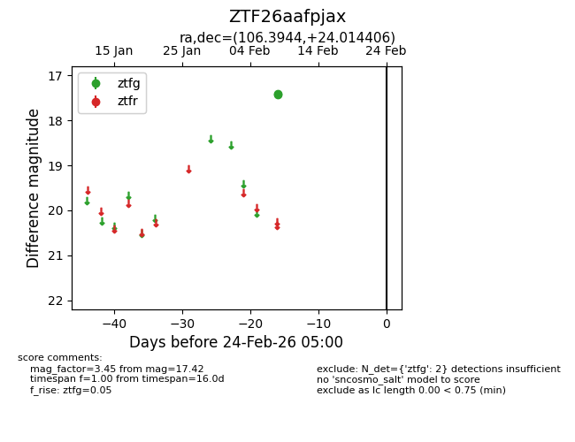
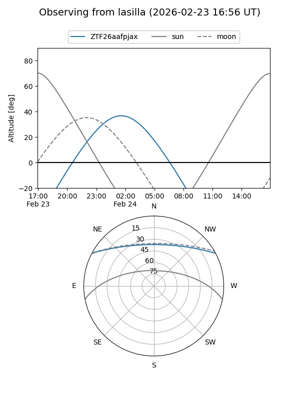
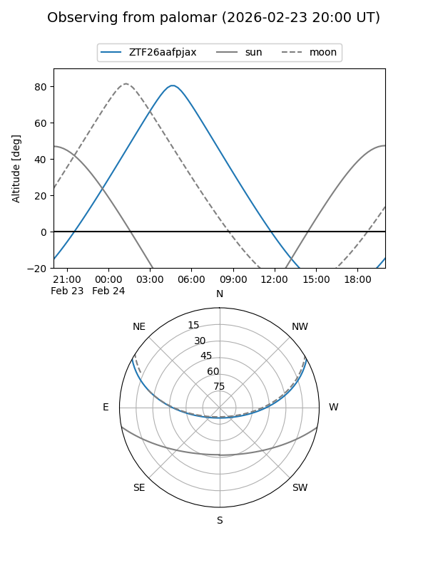

ZTF26aafpjax
Target ZTF26aafpjax at 2026-02-24 09:08
Aliases and brokers:
FINK: link
Lasair: link
ALeRCE: link
alt names
ZTF26aafpjax (ztf,fink_ztf)
Coordinates:
equatorial (ra, dec) = 106.3944,+24.01441
equatorial (HMS+DMS) = 07:05:34.67,+24:00:51.86
galactic (l, b) = (192.6726,+13.63259)
Flags:
Photometry:
last ztfg=17.42
2 ztfg detections
Lightcurve

Visibility


Additional plots